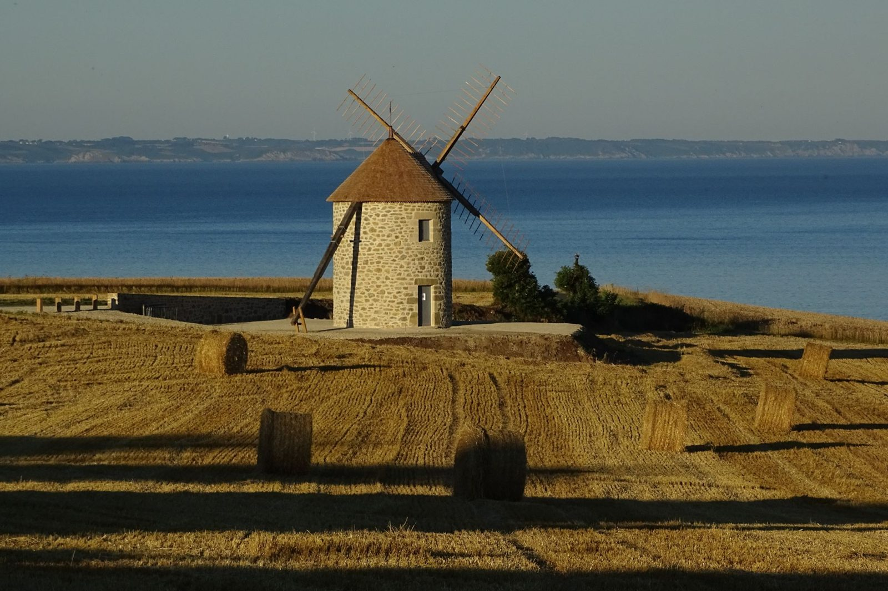

Levrioù
Pemzek levr diwar-benn ar gomun, eus « War bord ar mor » (2000) betek « Glad Terrug » (2026).
Al levrioùLevrioù, prezegennoù, abardaevezhioù e brezhoneg, baleadegoù ha gweladennoù er vilin-avel : amañ e vez dastumet eost (moisson) memor Terrug.
Krouet e 1997 e ra EOST war-dro istor, geografiezh, brezhoneg ha glad bihan Terrug. Pemzek levr, abadennoù brezhoneg, filmoù kozh, prezegennoù hag ur vilin-avel adsavet dirak ar bae.
Hor istor
Skeudenn : Georges Le FouestPemzek levr diwar-benn ar gomun, eus « War bord ar mor » (2000) betek « Glad Terrug » (2026).
Al levrioùE-pad ar goañv, emvodoù digoust diwar-benn glad Breizh : gwenanerezh, laboused al liorzhioù, filmoù, dielloù…
PrezegennoùAbaoe 2012, ur merc'her bep miz, e komzer brezhoneg e ti ar re yaouank. An holl liveoù, merenn-vihan.
Abardaevezhioù e brezhonegAdsavet a-drugarez da EOST, an hini nemeti eo eus milinoù-avel gourenez Kraozon a c'hall bezañ gweladennet gant an dud.
Gweladenniñ ar vilinBaleadegoù displeget en hañv, ober war-dro fornioù, poulloù-kannañ, sablerioù ha chapel Lanjulit.
DizoloiñDastum skeudennoù, testenioù ha filmoù, gant Gwarez filmoù Breizh.
Skeudennoù« Patrimoine breton – Glad Terrug » : 132 bajenn gant skeudennoù diwar-benn an dilhad, anvioù al lec'hioù ha brezhoneg Terrug. 18 €.
Lenn ar c'heleierDanevelloù ar bodadegoù meur, programmoù hag eñvorennoù : chom a ra blog istorel ar gevredigezh hon deizlevr.
DanvezioùGallout a ra pep hini degas danvez : ur luc'hskeudenn gozh eus un eured, un testeni, un nebeud eurioù skoazell er vilin pe en ur emezelañ (8 € bep bloaz). Donemad, bienvenue !